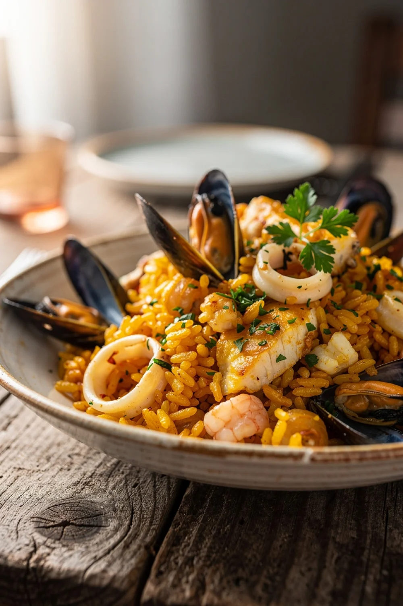

Recette de l'Arroz à la marinera
Découvrez notre délicieuse recette de l'Arroz à la marinera, parfaite pour un repas convivial.
Ingrédients :
- 400 g de crevettes ou gambas entières (gardez les têtes et carcasses pour le bouillon)
- 400 g de moules nettoyées et ébarbées
- 300 g de calamars (ou encornets) coupés en anneaux
- 300 g de riz rond (type bomba ou riz à paella)
- 1 oignon moyen, finement haché
- 2 gousses d'ail, finement hachées
- 1 poivron rouge, coupé en dés
- 2 tomates mûres, pelées et concassées
- 1 litre de bouillon de poisson (préparé avec les têtes et carcasses des crevettes)
- 1 cuillère à café de paprika doux
- Quelques brins de safran (ou colorant alimentaire)
- Huile d'olive
- Sel et poivre
- Persil frais haché pour la garniture
- 1 citron coupé en quartiers pour servir
- 1 verre de vin blanc sec
- 1 poivron vert, coupé en dés
Instructions :
- Dans une grande poêle large (ou poêle à paella), faites chauffer 2 cuillères à soupe d'huile d'olive. Saisissez les crevettes 1 à 2 minutes par face à feu vif. Retirez-les et réservez-les. Faites de même avec les anneaux de calamar pendant 2 minutes, puis réservez.
- Dans la même poêle, ajoutez un peu d'huile si nécessaire et faites revenir l'oignon, l'ail et les poivrons (rouge et vert) jusqu'à ce qu'ils soient tendres.
- Ajoutez les tomates concassées et laissez mijoter 5 minutes.
- Incorporez le riz et mélangez bien pour qu'il s'im prègne des saveurs. Ajoutez le paprika et le safran, puis versez le vin blanc. Laissez réduire légèrement.
- Versez le bouillon de poisson chaud, salez et poivrez. Laissez cuire à feu moyen pendant environ 15 minutes, en remuant de temps en temps.
- Ajoutez les moules et les crevettes réservées. Couvrez et laissez cuire encore 5 à 7 minutes, jusqu'à ce que les moules s'ouvrent et que le riz soit tendre.
- Retirez du feu, couvrez et laissez reposer 5 minutes avant de servir.
- Garnissez de persil frais haché et servez avec des quartiers de citron. Bon appétit !
Bon appétit !
Partagez votre avis.
Votre opinion est importante pour nous !